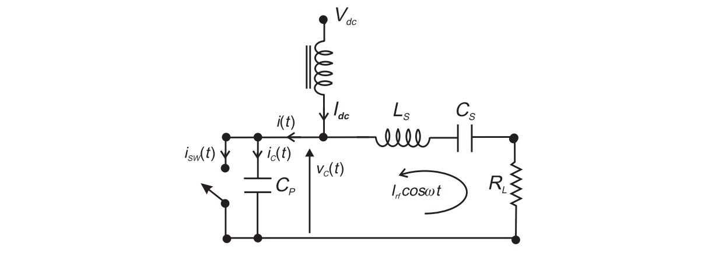
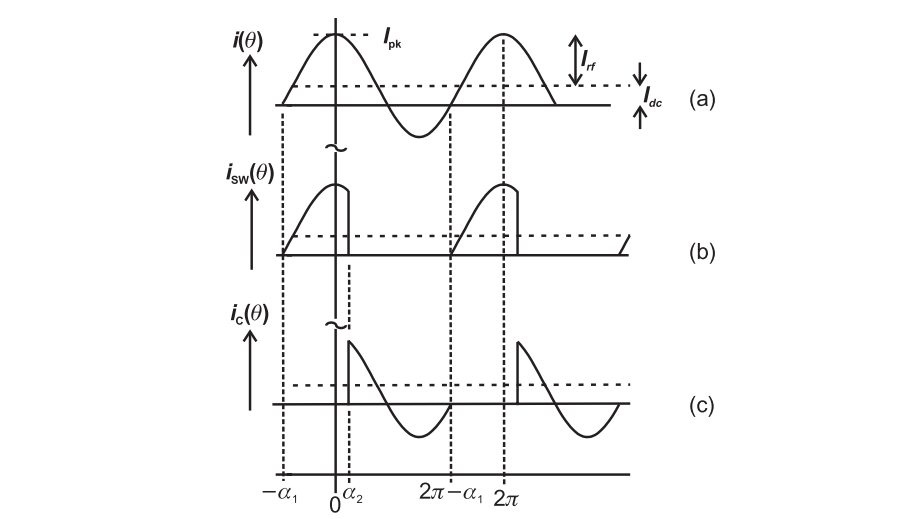
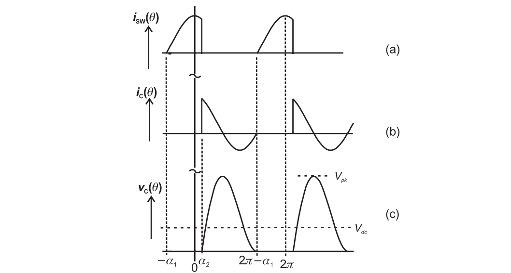
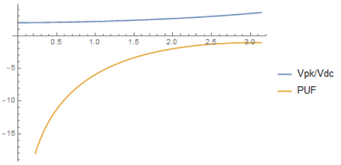
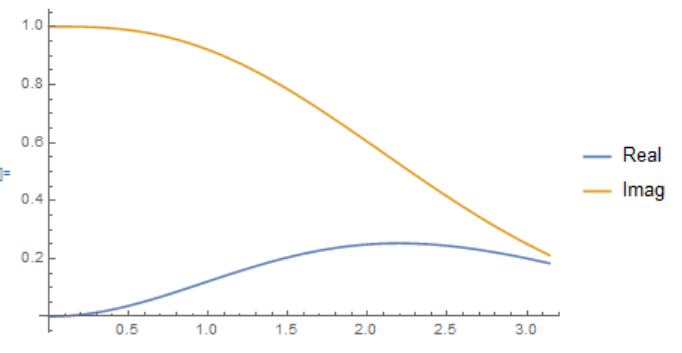
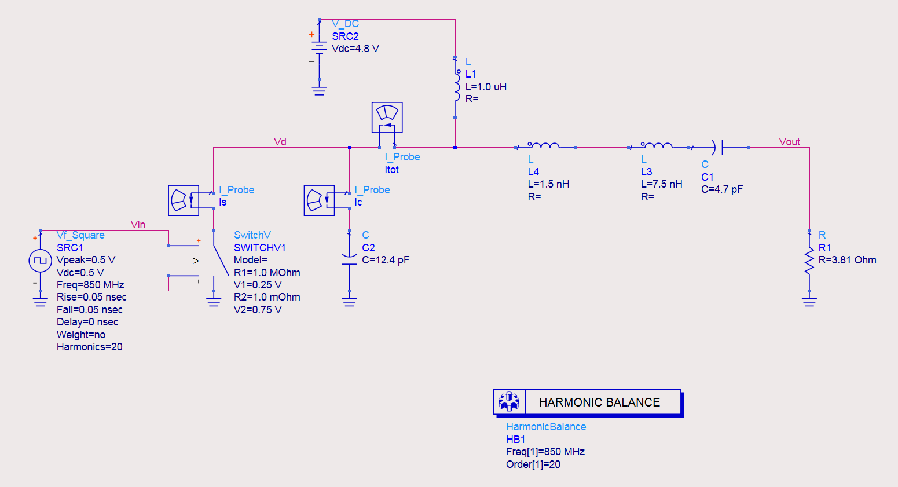
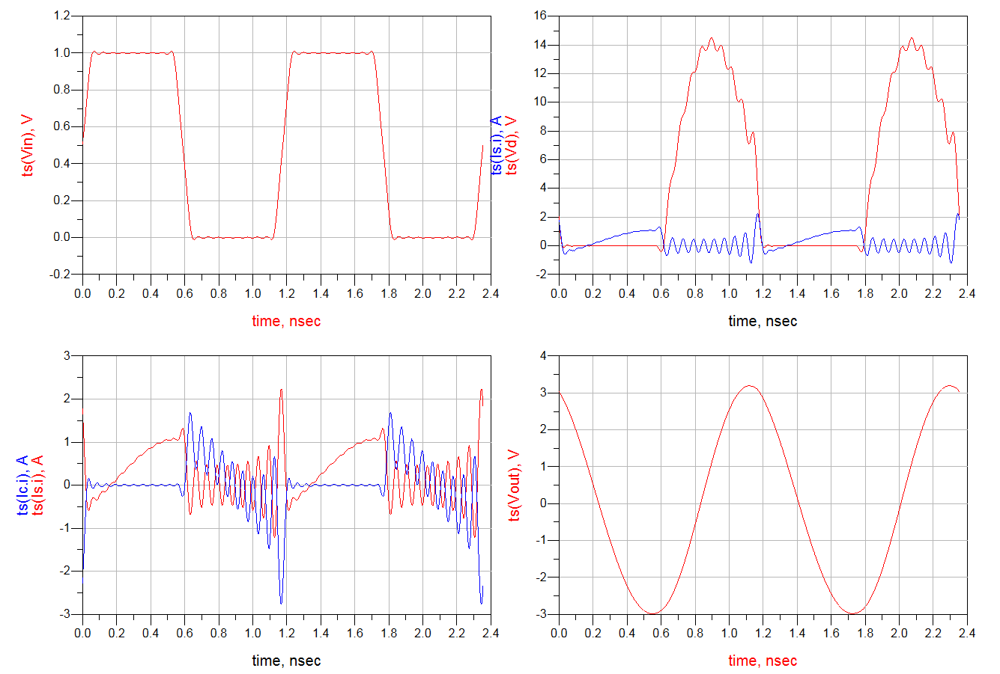
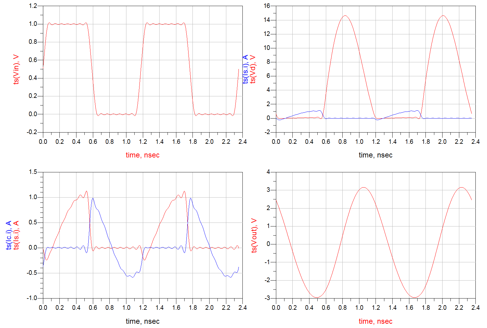
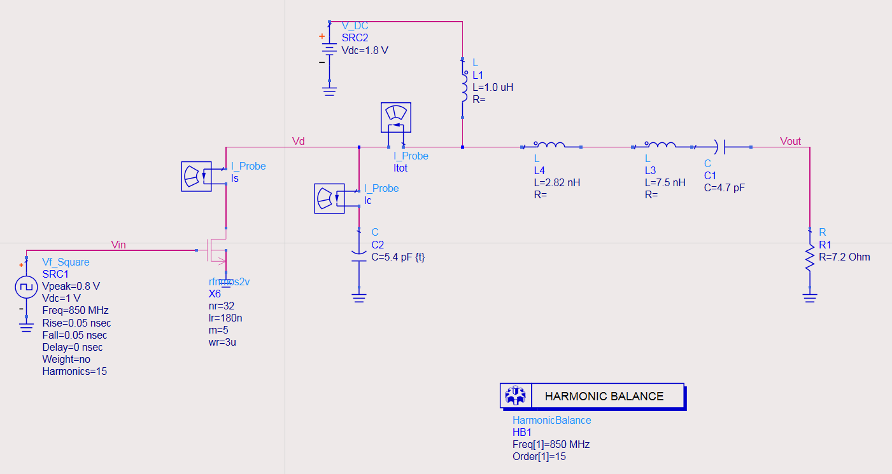
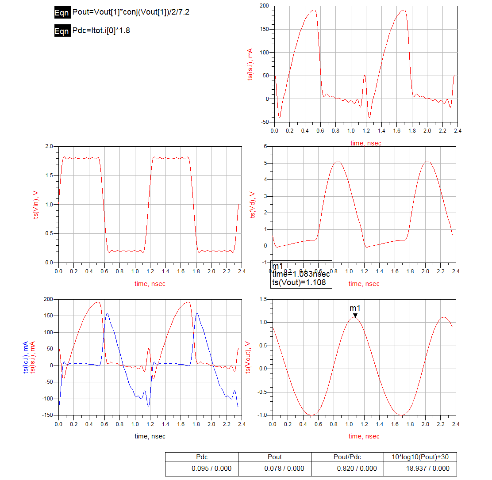

Class E Power Amplifier
This article details the design of class E power amplifier.
Calculation

In the analysis, all the time variable $t$ is replaced with conduction angle $\theta$.
It is apparent that $i(\theta)$ is composed of two component, namely
With the normalization $m=I_{rf}/I_{dc}$, we can write
The current waveform is as follows

The switched transistor turn on from $-\alpha_1$ to $\alpha_2$, where all the current flow through the transistor, and thus the $i_{sw}(\theta)$ replicates $i(\theta)$. Similarly, for the duration from $\alpha_2$ till $2\pi-\alpha_2$.
The conduction angle is defined as
From the peak current, we have
From the initial condition $I_{dc}(1+m\cos\alpha_1)=0$, we have
Since the average current flow through the transistor equals to $I_{dc}$, we have
Combined with aforementioned equations, it leads to
or
or
where we established the connection between the conduction angle and the peak/average ratio. Note that this requirement also ensures that $\int_{\alpha_2}^{2\pi-\alpha_1} i_c(\theta) d\theta=0$ and $v_C(2\pi-\alpha_2)=0$.
The voltage can be written as
The voltage waveform is as follows

The average DC value is
The in-phase component
The quadrature component
Power deliver to the load is therefore
and the DC power consumption is
The two are identical, and thus the efficiency is 100%.
To calculate the required output impedance
we may write
Real and imaginary parts are
where $I=mI_{dc}$.
Design Consideration
The peak voltage is
The peak current is
Thus, equivalent class A PA can deliver a power of
It can be demonstrated that as the conduction angle increases, both the voltage peak-to-average ratio and the PUF (Power Utilization Factor, compared to class A PA with the same $V_{pk}$ and $I_{pk}$) increases.

The Mathematica code is as follows
1 | a1 = ArcTan[-((2 Pi + Sin[phi] - phi)/(1 - Cos[phi]))] + Pi; |
Required load

The Mathematica code is as follows
1 | a1 = ArcTan[-((2 Pi + Sin[phi] - phi)/(1 - Cos[phi]))] + Pi; |
Design Example
Steps
Choose the conduction angle $\phi$, and calculate normalized parameters. For instance, for a conduction angle of 125°.
1
2
3
4
5
6
7
8
9
10
11
12
13a1 = ArcTan[-((2 Pi + Sin[phi] - phi)/(1 - Cos[phi]))] + Pi;
a2 = phi - a1;
m = -1/Cos[a1];
Vdc = (1/2/Pi) (m/2) (m (Sin[a1]^2 - Sin[a2]^2) +
2 (Cos[a2] - Cos[a1]));
Ipk = m + 1;
Vci = -1/2/Pi (m (Sin[a1]^2 - Sin[a2]^2) + 2 (Cos[a2] - Cos[a1]));
Vcq = 1/2/
Pi ((m^2 - 2) (Sin[a1] + Sin[a2]) - m/2 (Sin[2 a1] + Sin[2 a2]));
Rl = -Vci/m;
Xl = Vcq/m;
{Vdc, Ipk, Rl, Xl} /. phi -> 125/180 Pi // N
(* result: {1.36071, 4.28307, 0.252485, 0.532716} *)Scaling the parameters
- Scale the $I_{pk}$ by $I_{dc}$
- Scale the $V_{dc}$ by $I_{dc}/(\omega C_p)$
- Scale the impedances by $1/(\omega C_p)$
For instance, for a actual $I_{pk}=1,V_{dc}=4.8$, the voltage need to be scaled by 4.8/1.36, the current need to be scaled by 1/4.28, and the impedances need to be scaled by 15.1.
Verification

The simulation results are as follows:

The oscillating problem can be alleviated by reducing the capacitor from 12.4 pF to 10.4 pF.

If we adopt a real transistor

The simulated performance is

It delivers 19 dBm output power with DE of 82% at 850 MHz.
Reference
- S. C. Cripps. RF Power Amplifier for Wireless Communications. Artech House, 2014.
- Post link: https://triblemany.github.io/archives/b229b9f3/class-e-power-amplifier.html
- Copyright Notice: All articles in this blog are licensed under BY-NC-SA unless stating additionally.